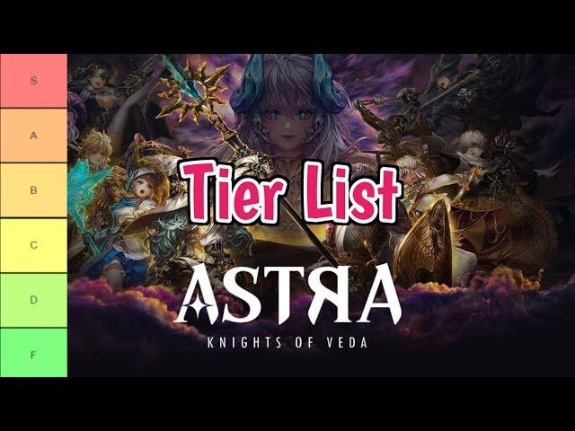

Astra: Knights of Veda - Panduan Tier List dan Strategi Ultra Lengkap untuk Pemula (2025)

Astra: Knights of Veda menjadi salah satu game action MORPG 2D yang saat ini tengah ramai dimainkan, terutama setelah rilis global yang menyita perhatian banyak gamer. Dengan visual yang memukau, roster karakter yang bervariasi, dan sistem pertarungan yang penuh aksi, game ini menawarkan kedalaman strategi yang cukup kompleks, khususnya dalam membangun tim dan memilih karakter utama.
Mengapa Tier List Itu Penting?
Tier list merupakan panduan tak tertulis yang sangat membantu dalam menentukan karakter mana yang patut difokuskan, terutama di awal permainan. Beberapa alasan mengapa kamu perlu mengikuti tier list:
- Efisiensi resource: Menghindari kesalahan upgrade karakter yang kurang berguna.
- Progres cepat: Menaklukkan konten PvE, PvP, dan boss raid dengan lebih mudah.
- Dominasi arena: Menyusun tim berdasarkan meta terbaru.
Tier List Astra: Knights of Veda (Update Juli 2025)
S-Tier: Karakter Meta Terbaik (Rekomendasi Investasi Jangka Panjang)
- Edward: DPS melee dengan serangan area dan efek burn. Efektif di semua mode, termasuk PvE dan PvP.
- Sansar: Knight dengan damage melee tinggi dan kemampuan summon serigala. Cocok untuk burst dan kontrol tambahan.
- Xanthia: Bintang baru di awal global release. Pengendali elemen dark dengan AoE dan skill crowd control.
- Saeya: Tank dan healer hybrid yang sulit ditumbangkan. Cocok untuk frontline utama.
A-Tier: Pilihan Andal di Berbagai Situasi
- Albert: Tank dengan statistik pertahanan tertinggi. Ideal untuk bertahan lama dalam pertarungan panjang.
- Ardor: DPS elemen fire terbaik di jajaran karakter 4-star.
- Lucian: Healer bintang 4 yang dapat diandalkan sejak awal permainan.
- Marthel: Support dengan buff attack speed dan damage, cocok dalam tim yang mengandalkan tempo cepat.
B-Tier dan Di Bawahnya: Pilihan Sementara atau Situasional
- Leon: Tank gratis yang cukup solid di early game.
- Yanko: Dealer damage berbasis turret. Efektif untuk clear stage cepat.
- Amor: Karakter dengan skill refleksi damage. Lebih cocok digunakan di PvP.
Catatan: Posisi tier bisa berubah tergantung patch terbaru, rotasi banner, dan sinergi tim.
Faktor Penentu Posisi Tier
- Skill Set: Kemampuan AoE, crowd control, healing, dan burst menjadi nilai tambah.
- Role Flexibility: Karakter multifungsi akan memiliki tier lebih tinggi.
- Synergy: Cocok tidaknya dengan relic meta dan komposisi tim.
- Availability: Karakter limited atau mudah didapat dari banner berpengaruh pada peringkat.
- Update Patch: Buff dan nerf dapat mengubah posisi karakter di tier list.
Rekomendasi Komposisi Tim untuk Pemula
Tim ideal di awal permainan sebaiknya memiliki keseimbangan antara DPS, tank, support, dan utility. Ini akan memudahkan kamu menyelesaikan berbagai mode tanpa perlu ganti-ganti formasi terlalu sering.
| Slot | Karakter Saran | Catatan |
|---|---|---|
| DPS | Edward, Sansar, Ardor | Fokus pada burst dan serangan area |
| Tank | Saeya, Albert, Leon | Ketahanan tinggi, ideal untuk menahan serangan berat |
| Support | Marthel, Violet, Lucian | Pemberi buff, heal, atau shield tim |
| Utility | Xanthia, Amor, Yanko | Kombinasi crowd control dan farming |
Panduan Bermain Astra: Knights of Veda untuk Pemula
1. Pahami Role Setiap Knight
Setiap karakter punya fungsi utama, baik sebagai DPS, tank, healer, atau support. Pastikan kombinasi dalam tim kamu lengkap agar bisa menghadapi berbagai jenis konten.
2. Jangan Asal Upgrade
Karakter awal biasanya ada di tier B ke bawah. Jangan buru-buru upgrade sebelum mendapatkan Knight dari tier S atau A. Simpan resource seperti gold dan material ascension.
3. Naikkan Level dan Ascension Secara Efisien
Level karakter tidak naik otomatis dari pertarungan. Gunakan EXP books dari hasil farming. Material ascension bisa didapat dari dungeon harian dan vendor khusus.
4. Prioritaskan Upgrade Gear
Senjata utama DPS dan perlengkapan pendukung untuk tank atau healer menjadi prioritas. Gunakan gear lama untuk memperkuat yang baru lewat sistem enhance.
5. Gunakan Dodge dan Ultimate dengan Bijak
Fitur dodge bisa digunakan tidak hanya untuk menghindari, tapi juga sebagai animation cancel. Sementara Ultimate akan sangat menentukan hasil pertarungan, apalagi saat melawan boss.
6. Selesaikan Misi dan Eksplorasi Map
NPC dengan ikon misi biasanya memberikan hadiah penting. Selesaikan misi harian, utama, dan world quest untuk membuka fitur baru dan dapatkan item langka.
7. Perhatikan Elemen di Setiap Stage
Beberapa boss dan musuh punya kelemahan elemen tertentu. Rancang tim dengan elemen beragam agar lebih fleksibel.
8. Reroll dan Gacha Tips
- Lakukan reroll hingga mendapatkan minimal satu karakter S-Tier, seperti Xanthia, Edward, atau Saeya.
- Lucian (healer 4-star) adalah jaminan di summon awal dan sangat penting untuk progres awal.
- Manfaatkan banner event rate-up untuk summon karakter meta.
- Gunakan ticket di beginner banner dengan jaminan 5-star dalam 50 summon pertama.
Progresi Karakter dan Resource Management
Leveling dan Ascension
Gunakan EXP books untuk naik level dan material harian untuk melakukan ascension. Skill up sebaiknya diprioritaskan pada DPS utama kamu.
Relic dan Gear Enhancement
Relic bisa difarm di Veda’s Nightmare setelah area boss I. Setiap Knight punya 5 slot relic. Prioritaskan peningkatan relic pada karakter core seperti DPS dan tank.
Mekanik Pertarungan dan Eksplorasi
Dasar Pertarungan
- Movement: Gunakan joystick digital, dash untuk menghindar.
- Dodge: Bisa menghindari dan cancel animasi serangan.
- Ultimate: Sekarang bisa diaktifkan manual, gunakan saat boss stun atau momen genting.
Diversitas Tim dan Elemen
Setiap tim sebaiknya memiliki keragaman elemen agar bisa fleksibel dalam berbagai stage dan boss battle. Peran utama tetap berfokus pada DPS, tank, healer, dan utility.
Tips Spesial untuk Pemula
- Fokus menyelesaikan konten PvE terlebih dulu sebelum mencoba PvP.
- Klaim hadiah login harian dan event—sering kali ada bonus gacha ticket gratis.
- Gabung ke komunitas seperti Discord untuk update meta dan diskusi strategi.
FAQ (Pertanyaan yang Sering Diajukan)
Q: Apakah karakter tier rendah seperti B/C masih layak digunakan?
A: Masih, khususnya di early game. Namun segera ganti jika sudah mendapatkan Knight tier lebih tinggi.
Q: Apakah semua karakter bisa naik tier di update berikutnya?
A: Tentu bisa, tergantung buff, nerf, atau penambahan skill baru. Pantau patch note secara berkala.
Q: Bagaimana cara farming material dan EXP dengan cepat?
A: Selesaikan main quest, world mission, dan aktifkan auto-battle untuk grind farming harian.
Q: Kapan waktu terbaik untuk gacha?
A: Saat banner rate-up karakter 5-star meta aktif. Gunakan gems dan ticket untuk meningkatkan peluang.
Memahami tier list dan strategi pengembangan karakter sangat krusial bagi kamu yang baru memulai petualangan di dunia Astra: Knights of Veda. Fokuskan upgrade pada karakter dari tier S dan A, bangun tim yang seimbang, dan manfaatkan setiap fitur dalam game untuk memperkuat formasi. Jangan lupa selalu cek update dan patch terbaru agar tetap relevan dengan meta yang terus berubah.
Ingin memperkuat tim kamu dengan lebih cepat? Kamu bisa langsung Top Up Astra Knights of Veda di Topupgim, aman, cepat, dan terpercaya untuk semua kebutuhan in-game kamu!